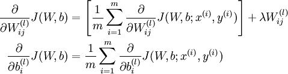

反向传导算法
假设我们有一个固定样本集 ，它包含 个样例。我们可以用批量梯度下降法来求解神经网络。具体来讲，对于单个样例 ，其代价函数为：
这是一个（二分之一的）方差代价函数。给定一个包含 个样例的数据集，我们可以定义整体代价函数为：

以上关于 定义中的第一项是一个均方差项。第二项是一个规则化项（也叫权重衰减项），其目的是减小权重的幅度，防止过度拟合。
定义中的第一项是一个均方差项。第二项是一个规则化项（也叫权重衰减项），其目的是减小权重的幅度，防止过度拟合。
定义中的第一项是一个均方差项。第二项是一个规则化项（也叫权重衰减项），其目的是减小权重的幅度，防止过度拟合。[注：通常权重衰减的计算并不使用偏置项  ，比如我们在
，比如我们在 的定义中就没有使用。一般来说，将偏置项包含在权重衰减项中只会对最终的神经网络产生很小的影响。如果你在斯坦福选修过CS229（机器学习）课程，或者在YouTube上看过课程视频，你会发现这个权重衰减实际上是课上提到的贝叶斯规则化方法的变种。在贝叶斯规则化方法中，我们将高斯先验概率引入到参数中计算MAP（极大后验）估计（而不是极大似然估计）。]
的定义中就没有使用。一般来说，将偏置项包含在权重衰减项中只会对最终的神经网络产生很小的影响。如果你在斯坦福选修过CS229（机器学习）课程，或者在YouTube上看过课程视频，你会发现这个权重衰减实际上是课上提到的贝叶斯规则化方法的变种。在贝叶斯规则化方法中，我们将高斯先验概率引入到参数中计算MAP（极大后验）估计（而不是极大似然估计）。]
，比如我们在 的定义中就没有使用。一般来说，将偏置项包含在权重衰减项中只会对最终的神经网络产生很小的影响。如果你在斯坦福选修过CS229（机器学习）课程，或者在YouTube上看过课程视频，你会发现这个权重衰减实际上是课上提到的贝叶斯规则化方法的变种。在贝叶斯规则化方法中，我们将高斯先验概率引入到参数中计算MAP（极大后验）估计（而不是极大似然估计）。]权重衰减参数用于控制公式中两项的相对重要性。在此重申一下这两个复杂函数的含义： 是针对单个样例计算得到的方差代价函数；
是针对单个样例计算得到的方差代价函数； 是整体样本代价函数，它包含权重衰减项。
是整体样本代价函数，它包含权重衰减项。
是针对单个样例计算得到的方差代价函数； 是整体样本代价函数，它包含权重衰减项。以上的代价函数经常被用于分类和回归问题。在分类问题中，我们用 y=0 或 1 ，来代表两种类型的标签（回想一下，这是因为 sigmoid激活函数的值域为[0,1] ；如果我们使用双曲正切型激活函数，那么应该选用 -1 和 +1 作为标签）。对于回归问题，我们首先要变换输出值域（译者注：也就是 y ），以保证其范围为 [0,1] （同样地，如果我们使用双曲正切型激活函数，要使输出值域为 [-1,1]）。
我们的目标是针对参数 W 和 b 来求其函数 的最小值。为了求解神经网络，我们需要将每一个参数
的最小值。为了求解神经网络，我们需要将每一个参数 和
和 初始化为一个很小的、接近零的随机值（比如说，使用正态分布 生成的随机值，其中
初始化为一个很小的、接近零的随机值（比如说，使用正态分布 生成的随机值，其中  设置为 ），之后对目标函数使用诸如批量梯度下降法的最优化算法。因为 是一个非凸函数，梯度下降法很可能会收敛到局部最优解；但是在实际应用中，梯度下降法通常能得到令人满意的结果。最后，需要再次强调的是，要将参数进行随机初始化，而不是全部置为 0 。随机初始化的目的是使对称失效。
设置为 ），之后对目标函数使用诸如批量梯度下降法的最优化算法。因为 是一个非凸函数，梯度下降法很可能会收敛到局部最优解；但是在实际应用中，梯度下降法通常能得到令人满意的结果。最后，需要再次强调的是，要将参数进行随机初始化，而不是全部置为 0 。随机初始化的目的是使对称失效。
的最小值。为了求解神经网络，我们需要将每一个参数 和 初始化为一个很小的、接近零的随机值（比如说，使用正态分布 生成的随机值，其中 设置为 ），之后对目标函数使用诸如批量梯度下降法的最优化算法。因为 是一个非凸函数，梯度下降法很可能会收敛到局部最优解；但是在实际应用中，梯度下降法通常能得到令人满意的结果。最后，需要再次强调的是，要将参数进行随机初始化，而不是全部置为 0 。随机初始化的目的是使对称失效。梯度下降法中每一次迭代都按照如下公式对参数 W 和 b 进行更新：
其中  是学习速率。其中关键步骤是计算偏导数。
是学习速率。其中关键步骤是计算偏导数。
是学习速率。其中关键步骤是计算偏导数。我们现在来讲一下反向传播算法，它是计算偏导数的一种有效方法。
我们首先来讲一下如何使用反向传播算法来计算  和 ，这两项是单个样例 的代价函数
和 ，这两项是单个样例 的代价函数  的偏导数。一旦我们求出该偏导数，就可以推导出整体代价函数
的偏导数。一旦我们求出该偏导数，就可以推导出整体代价函数 的偏导数：
的偏导数：
和 ，这两项是单个样例 的代价函数 的偏导数。一旦我们求出该偏导数，就可以推导出整体代价函数 的偏导数：
以上两行公式稍有不同，第一行比第二行多出一项，是因为权重衰减是作用于 W 而不是 b 。